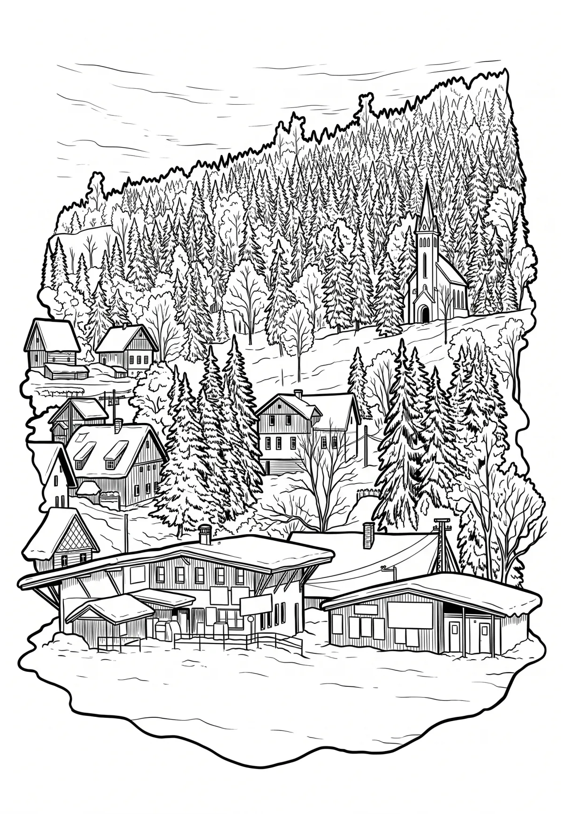

Bedřichov
Liberecký kraj · 705 m n. m.

město · #003
Bedřichov (německy Friedrichswald) je obec v okrese Jablonec nad Nisou v Libereckém kraji. Žije zde 401 obyvatel. Leží šest kilometrů severně od Jablonce nad Nisou a pět kilometrů východně od Liberce. V létě slouží Bedřichov jako výchozí místo pro turistiku a cykloturistiku po Jizerských horách.